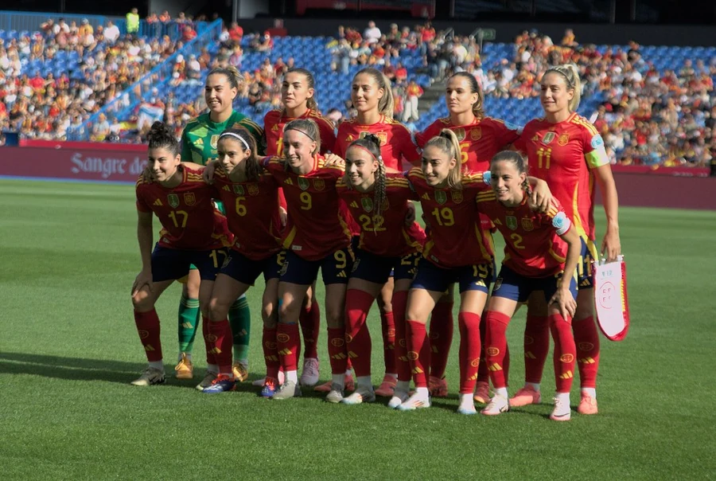
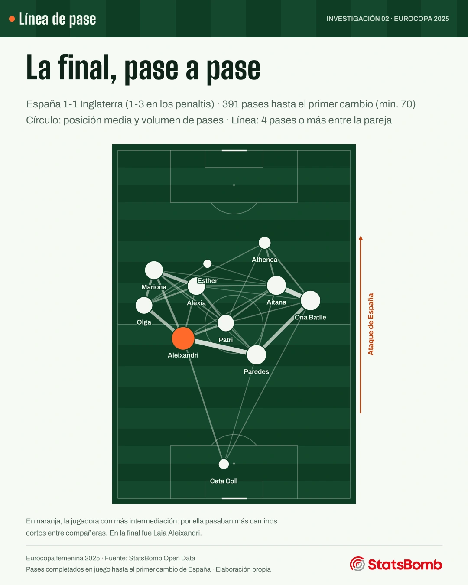
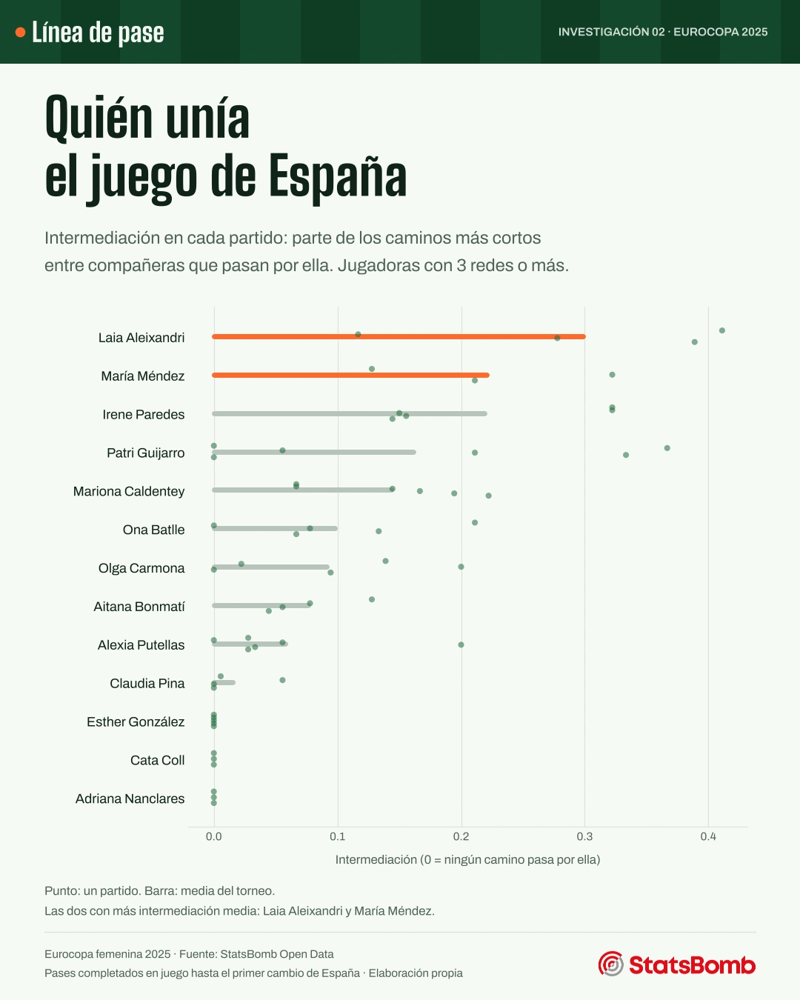
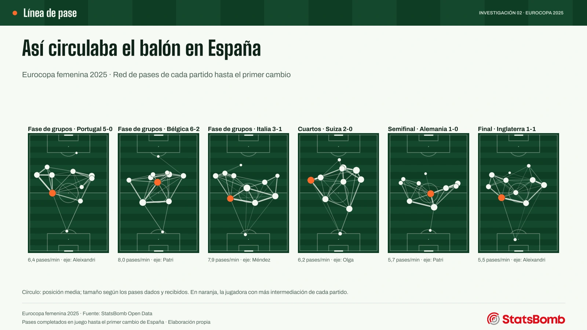
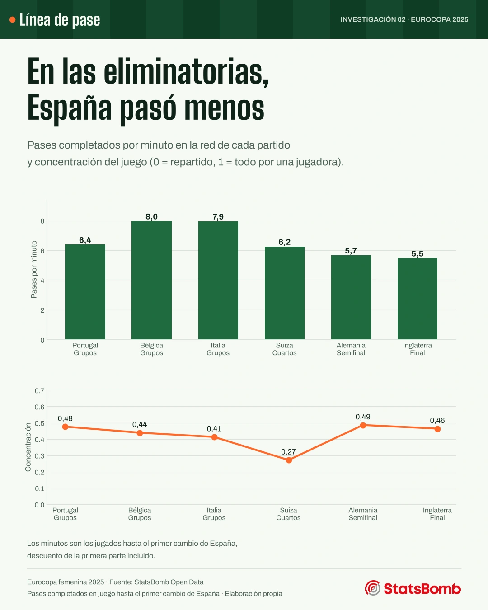

Proyectos / Investigación
Investigación · Fútbol femenino · Eurocopa 2025
Por dónde pasaba el juego de España
Las redes de pases de los seis partidos de la selección en la Eurocopa femenina 2025 muestran quién unía el juego y cómo cambió la circulación de la fase de grupos a la final.
- Pregunta
- ¿Quién conectaba el juego de España y cómo cambió durante el torneo?
- Datos
- StatsBomb Open Data · 6 partidos · 2.337 pases completados en las redes
- Herramientas
- Python (pandas, NetworkX, mplsoccer) · código y datos

Resultados
El juego se ordenaba desde atrás
Una red de pases dibuja cada partido como un mapa de conexiones: un círculo por jugadora, en su posición media, y una línea más gruesa cuantos más pases se dan dos compañeras. La pregunta interesante no es quién toca más el balón, sino por quién pasan los caminos entre las demás. Eso mide la intermediación.
Las cuatro jugadoras con más intermediación media fueron Laia Aleixandri, María Méndez, Irene Paredes y Patri Guijarro: centrales y mediocentro. España ordenaba el juego desde atrás y dejaba a las atacantes para terminarlo.


Partido a partido
Menos pases cuando subió el nivel
En la fase de grupos España completó entre 6,4 y 8,0 pases por minuto. En las eliminatorias bajó a entre 5,5 y 6,2, ante rivales de más nivel y en partidos más cerrados. Con seis partidos no se puede separar qué parte se debe al rival y qué parte a la propia España.
La red más repartida fue la de cuartos ante Suiza (concentración 0,27). En la semifinal y la final el juego volvió a concentrarse más (0,49 y 0,46).

| Fase | Rival | Resultado | Minutos | Pases | Pases/min | Concentración | Más intermediación |
|---|---|---|---|---|---|---|---|
| Fase de grupos | Portugal | 5-0 | 48 | 306 | 6,4 | 0,48 | Laia Aleixandri |
| Fase de grupos | Bélgica | 6-2 | 46 | 367 | 8,0 | 0,44 | Patri Guijarro |
| Fase de grupos | Italia | 3-1 | 61 | 488 | 7,9 | 0,41 | María Méndez |
| Cuartos | Suiza | 2-0 | 64 | 398 | 6,2 | 0,27 | Olga Carmona |
| Semifinal | Alemania | 1-0 | 68 | 387 | 5,7 | 0,49 | Patri Guijarro |
| Final | Inglaterra | 1-1 (pen. 1-3) | 72 | 391 | 5,5 | 0,46 | Laia Aleixandri |

Método
De los eventos a la red
En cada partido se cuentan los pases completados en juego de España, sin saques de banda, esquina, puerta, falta ni centro, y solo hasta su primer cambio: así las once jugadoras están en el campo todo el tramo y la red se puede comparar entre ellas. La posición de cada una es la media de los sitios donde dio y recibió pases.
La intermediación cuenta qué parte de los caminos más cortos entre compañeras pasa por cada jugadora. Para que «más pases» signifique «más cerca», la distancia entre dos jugadoras es uno dividido por los pases que se dieron. La concentración del equipo es la centralización de Freeman sobre los pases dados y recibidos: 0 si todas están igual de conectadas y 1 si todo pasa por una.
Hasta dónde llega este análisis
- Solo cuenta pases completados: ni conducciones ni pérdidas.
- El corte en el primer cambio deja fuera el final de cada partido: se analizan entre 46 y 72 minutos.
- La posición media mezcla las fases de ataque y de defensa.
- Seis partidos describen un torneo, no un estilo permanente.
Trabajo verificable
Datos, código y comprobaciones
El programa comprueba en cada partido que no haya eventos duplicados ni coordenadas fuera del campo, que antes del primer cambio solo aparezcan titulares y que los pases de la red cuadren con la suma de las conexiones. Siete pruebas automáticas con partidos inventados verifican el corte, el grafo y las medidas.
Descargar el resumen por partido y las medias por jugadora (CSV).
Fuente: StatsBomb Open Data, Eurocopa femenina 2025. Los eventos originales no se redistribuyen, como pide su acuerdo de uso.